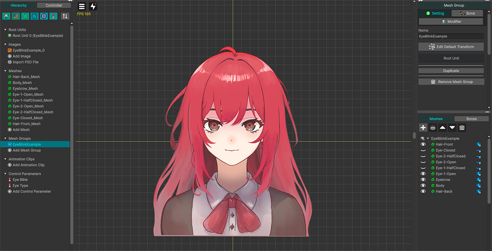
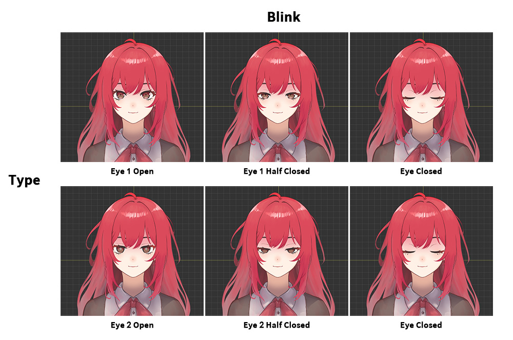
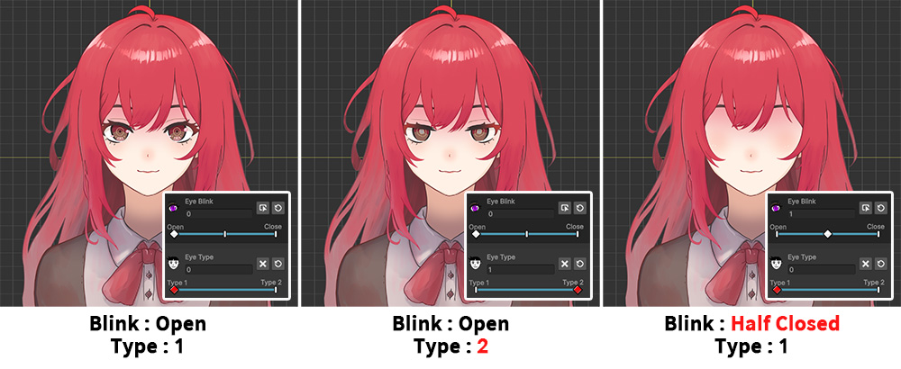
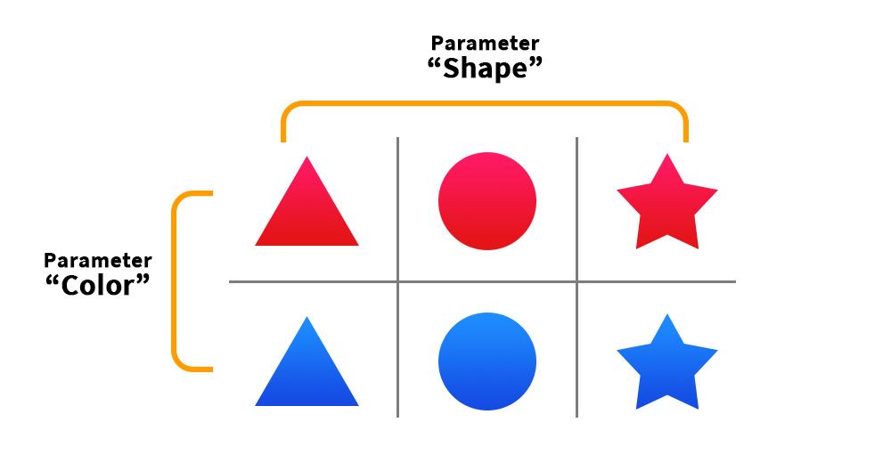
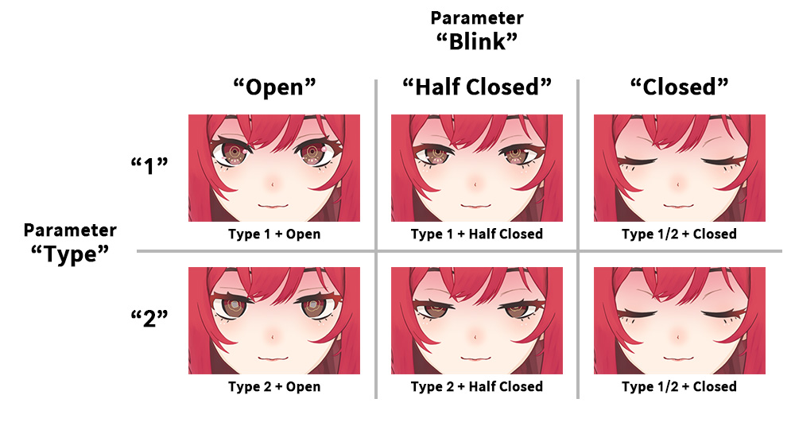
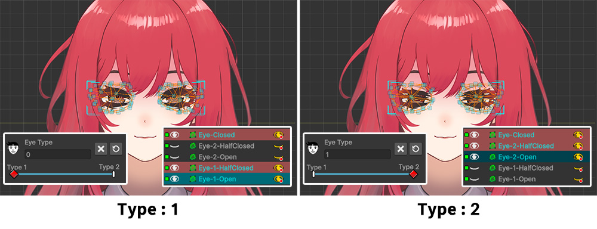

AnyPortrait > Manual > Visibility rule for multiple values
Visibility rule for multiple values
Hiding and showing meshes using control parameters or keyframe animation is one of the most effective ways to express things like character expressions.
You can use this to express complex things like "the character's facial expressions according to their emotions", "the character opens or closes their eyes", "the character opens or closes his mouth", etc.
However, users sometimes encounter difficulties when combining two or more control parameters or modifier values to make a mesh visible.
We often receive inquiries from our team about the issue of "The eye mesh disappearing when a character with multiple expressions blinks."
This issue is caused by the rules covered on this page.
This page uses this issue as an example to explain how the Visibility Rule based on multiple modifier values works.
The problem of combining facial expressions and blinking

Here's an example character to demonstrate the problem.
It has two facial expressions, and we'll make it blink by toggling the visibility of meshes.

The meshes mapped to the two control parameters ("Type" and "Blink") that determine the eye shape are as shown above.
"Eye 1" represents a slight smile, while "Eye 2" represents a slightly dazed expression.
The eye closing process consists of three frames:
"Open", "Half Closed", and "Closed", respectively.
A total of six shapes can be created by combining these states.
However, since the closed eye expression is unrelated to other facial expressions, a single mesh ("Eye Closed") is used to represent it.
Now, let's register a total of 5 meshes to the modifier and set them to be controlled by the control parameters.

(1) Register the Color Only (Controller) modifier.
(2) Register all five eye meshes to the two control parameters: "Type" and "Blink".
Now let's add keys to the two control parameters and set the visibility of the meshes at the keys.

First, we set the visibility of the "Type" control parameter, which switches the character's expression.
We created two keys: "1" and "2".
- When "Type" has a value of "1", only the "Eye 1 Open" mesh is visible.
- When "Type" has a value of "2", only the "Eye 2 Open" mesh is visible.
Hint
If you're already familiar with the visibility rules covered on this page, you'll know this step is the cause of the problem.
See the following explanation for the cause and solution.

Next, we'll set the visibility of the "Blink" control parameter, which causes the character's eyes to blink.
Three keys are created: "Open", "Half Closed", and "Closed".
- When "Blink" has a value of "Open", we set the "Eye 1 Open" and "Eye 2 Open" meshes to be visible.
- When "Blink" has a value of "Half Closed", we set the "Eye 1 Half Closed" and "Eye 2 Half Closed" meshes to be visible.
- When "Blink" has a value of "Closed", we set only the "Eye Closed" mesh to be visible.

Let's turn off Edit Mode and manipulate the control parameters to verify that the character's eye meshes transition properly.
You can see that the expression changes by manipulating the "Type" parameter.
However, when you change the "Blink" control parameter to make the eyes blink, the eye meshes completely disappear.
While there were no issues when selecting individual control parameters and working in Edit Mode, a problem arose when combining two control parameters, causing the mesh to disappear.
To resolve this issue, it's necessary to understand the visibility rule for multiple values.
Visibility rule

When you combine control parameters, multiple modifiers, or keyframe values to show or hide a mesh, you need to understand the rules to know what results will come from the combination of values.
AnyPortrait uses the "Multiply" rule to all color-related operations.
For visibility and alpha operations, the visible state is 1 and the invisible state is 0.
Multiplying these results in "1 x 0 = 0," so if any of the visibility values is "Hide," as in the image above, the mesh will be hidden.

To elaborate a bit on this, we've organized it into a table, as shown above.
If all visibility values for a mesh are "Show," the mesh will be rendered.
However, if any of the visibility values are "Hide," the mesh will not be rendered.
The rules themselves aren't difficult.
However, applying this rule, it seems a bit difficult to figure out how to set the values to express "character expressions" and "eye blinking".

When controlling the visibility of multiple meshes with two control parameters, it's easier to organize them by drawing a table like the one above.
Let's control the visibility of six meshes with the parameters "Color" and "Shape."
First, assign each parameter to the X-axis and Y-axis of the table, and then place the meshes corresponding to each parameter value.
This will complete the table shown above.

This table sets the visibility of meshes based on the key value of each control parameter.
For example, the "Red" key of the "Color" parameter sets all red meshes to be visible, regardless of shape, and hides all others.
The "Circle" key of the "Shape" parameter sets all circular meshes to be visible, regardless of color, and hides all others.
Let's assume that the keys and values for the control parameters are set in this way.

Let's understand how two control parameters work together to make only one of the six meshes visible, using a table.
First, when the "Color" parameter is "Red," the meshes in row 1 will be visible, and the blue meshes in row 2 will be hidden.
If the "Shape" parameter is "Circle," the circle meshes in row 2 will be visible.
As a result, the "Red Circle" mesh in row 1 and column 2, which corresponds to the "intersection of visible meshes" along each axis, will be selected and rendered.
Hint
It's easier to understand if you draw a table with visibility values set to 1 and 0.
And it's easier to think of it as assigning values in bulk, without considering any other image attributes (shape, color, etc.) other than those for which each parameter is responsible.
Solving problems using the rule

Returning to our example, let's understand the visibility of this character's eye meshes by organizing them into a table.
We'll position each eye mesh based on the character's "Type" on the Y-axis and "Blink" on the X-axis.
Now, we'll know which meshes should be visible based on the control parameter keys.
If you understand the rules and go back and look at them again, you will see that the visibility of the meshes according to the "Type" parameter is set incorrectly.

Resets the visibility of meshes according to the rule.
- When "Type" has a value of "1", the meshes "Eye 1 Open", "Eye 1 Half Closed", and "Eye Closed" are all visible.
- When "Type" has a value of "2", the meshes "Eye 2 Open", "Eye 2 Half Closed", and "Eye Closed" are all visible.
In this example, the "Eye Closed" message may appear regardless of the expression.
If so, it should always be visible for all "Type" keys.
Fortunately, in the case of "Blink", the visibility value is set correctly.

Now, let's disable edit mode and test it out.
Unlike before, you can now close your character's eyes by combining it with an expression.
Preview visibility calculation results in edit mode

In edit mode, all parameters except the target control parameter or modifier are disabled by default.
Therefore, to view the results of multi-value combinations, you must disable edit mode.
However, you can preview the results of operations involving other modifiers or control parameters in edit mode by changing the Edit Mode Options (Related Page).
(1) Turn on Edit Mode.
(2) Open the View menu and enable "Edit Mode Options > Apply Multiple Modifiers if no conflict" (shortcut key D ) to view the combined color results in Edit Mode.
(3) Check the icon in the upper right corner of the workspace to see if multiple values are being combined and displayed in Edit Mode.